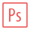
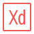
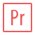

Mit navn er Dina, og til dagligt læser jeg multimediedesign i Aarhus.
Fokusområde
Min store passion ligger i front-end udvikling og kodning idet jeg ser det som et håndværk.
Derudover har jeg en stor interesse for UX design og brugeroplevelser, og jeg mener, at brugeroplevelser er nøglen til et opsigtsækkende og mindeværdigt website.
Kompetencer og værktøjer
Her er nogle af de redskaber og teknologier, som jeg har stiftet bekendtskab med på studiet og i min fritid:
Hvem er jeg?
Med mig som en del af dit team kan du forvente en holdspiller, som elsker når sammensætningen af folks kompetencer får et projekt til at gå op i en højere enhed.
Jeg trives i et dynamisk og socialt miljø, hvor der er plads til mangfoldighed, og hvor alle folks idéer og tanker bliver hørt.


